Definizione - Funzione di trasferimento
La funzione di trasferimento di un sistema è una funzione nel dominio delle frequenze che ne descrive il comportamento, mettendo in relazione ingressi e uscite (nel dominio delle frequenze).
Considerando un ingresso \( \underline{X}(\omega)\) e un'uscita \( \underline{Y}(\omega)\), si ha che vale \[ \underline{Y}(\omega) = \underline{H}(\omega) \cdot \underline{X}(\omega) \] dove \( \underline{H}(\omega)\) è la funzione di trasferimento. Da ciò è possibile definire \[ \underline{H}(\omega) = \frac{\underline{Y}(\omega)}{\underline{X}(\omega)} \]
Considerando un ingresso \( \underline{X}(\omega)\) e un'uscita \( \underline{Y}(\omega)\), si ha che vale \[ \underline{Y}(\omega) = \underline{H}(\omega) \cdot \underline{X}(\omega) \] dove \( \underline{H}(\omega)\) è la funzione di trasferimento. Da ciò è possibile definire \[ \underline{H}(\omega) = \frac{\underline{Y}(\omega)}{\underline{X}(\omega)} \]
Definizione - Filtro
Un filtro è una rete che altera un segnale in base alla sua frequenza (altera quindi la risposta in frequenza).
Ogni filtro può essere descritto da una funzione di trasferimento \( \underline{H}(\omega)\) che ne descrive il comportamento.
Ogni filtro può essere descritto da una funzione di trasferimento \( \underline{H}(\omega)\) che ne descrive il comportamento.
Frequenza di taglio
La frequenza di taglio è un parametro di definizione delle proprietà di un filtro: tipicamente la si identifica come la frequenza in cui il modulo della funzione di trasferimento \( \left| \underline{H}(\omega) \right|\) è uguale a \( \; {}^{1} /_{\sqrt{2}\;}\) (ovvero circa \( 0.707\)).Definizione - Filtro passa-basso
Un filtro passa-basso ideale è una rete caratterizzata dalla seguente funzione di trasferimento dove \( \omega_T\) è la pulsazione di taglio.
Questo filtro permette il passaggio di segnale ad una frequenza "bassa" mentre attenua i segnali ad una frequenza "alta" (rispetto alla frequenza di taglio). che, applicando Steinmetz, equivalerebbe al seguente circuito in cui si considera come segnale di ingresso quello del generatore \( \underline{E}\) e come segnale in uscita la tensione ai capi del condensatore \( \underline{V}_C\).
Calcolando \( \underline{V}_C\), considerando la formula del partitore di tensione, si ha che \[ \begin{array}{ccl} \underline{V}_C & = & \underline{E} \cdot \frac{\underline{Z}_C}{\underline{Z}_R + \underline{Z}_C} \\ & = & \underline{E} \cdot \frac{\frac{1}{\jmath \cdot \omega \cdot C}}{R + \frac{1}{\jmath \cdot \omega \cdot C}} \\ & = & \underline{E} \cdot \frac{\frac{1}{\jmath \cdot \omega \cdot C}}{\frac{\jmath \cdot \omega \cdot C \cdot R + 1}{\jmath \cdot \omega \cdot C}} \\ & = & \underline{E} \cdot \frac{1}{\jmath \cdot \omega \cdot C \cdot R + 1} \end{array} \] da cui è poi possibile calcolare la funzione di trasferimento come \[ \begin{array}{ccl} \underline{H}(\omega) & = & \frac{\underline{V}_C}{\underline{E}} \\ & = & \frac{\underline{E} \cdot \frac{1}{\jmath \cdot \omega \cdot C \cdot R + 1}}{\underline{E}} \\ & = & \frac{1}{\jmath \cdot \omega \cdot C \cdot R + 1} \\ & \overset{\cdot \frac{1 - \jmath \cdot \omega \cdot C \cdot R}{1 - \jmath \cdot \omega \cdot C \cdot R}}{=} & \frac{1}{\jmath \cdot \omega \cdot C \cdot R + 1} \cdot \frac{1 - \jmath \cdot \omega \cdot C \cdot R}{1 - \jmath \cdot \omega \cdot C \cdot R} \\ & = & \frac{1 - \jmath \cdot \omega \cdot C \cdot R}{\omega^2 \cdot C^2 \cdot R^2 + 1} \end{array} \] È quindi possibile calcolare il modulo della funzione di trasferimento come \[ \begin{array}{ccl} \left| \underline{H}(\omega) \right| & = & \left| \frac{1}{1 + \jmath \cdot \omega \cdot C \cdot R} \right| \\ & = & \frac{1}{\sqrt{1 + \omega^2 \cdot C^2 \cdot R^2}} \end{array} \] da cui è possibile calcolare la pulsazione di taglio cercando il valore per cui il modulo è uguale a \( \; {}^{1} /_{\sqrt{2}\;}\) \begin{aligned} & \left| \underline{H}(\omega) \right| = \frac{1}{\sqrt{2}} & \iff \\ & \frac{1}{\sqrt{1 + \omega^2 \cdot C^2 \cdot R^2}} = \frac{1}{\sqrt{2}} & \iff \\ & 1 + \omega^2 \cdot C^2 \cdot R^2 = 2 & \iff \\ & \omega^2 = \frac{1}{R^2 \cdot C^2} & \iff \\ & \omega_T = \frac{1}{R \cdot C} & \end{aligned} Graficando tale relazione, si ottiene che approssima bene la funzione di trasferimento di un filtro passa-basso ideale.
Considerando la fase, essa è uguale a \[ \begin{array}{ccl} \angle \underline{H}(\omega) & = & \arctan\left( \frac{\frac{-\omega \cdot C \cdot R}{\omega^2 \cdot C^2 \cdot R^2 + 1}}{\frac{1}{\omega^2 \cdot C^2 \cdot R^2 + 1}}\right) \\ & = & \arctan\left(\frac{-\omega \cdot C \cdot R}{1} \right) \\ & = & \arctan\left(-\omega \cdot C \cdot R \right) \end{array} \] che graficata è uguale a
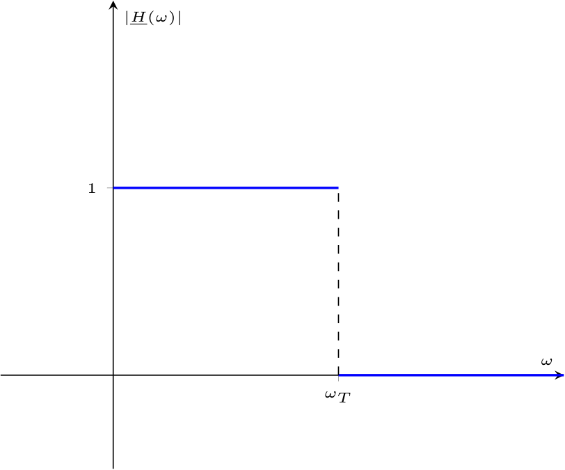
Questo filtro permette il passaggio di segnale ad una frequenza "bassa" mentre attenua i segnali ad una frequenza "alta" (rispetto alla frequenza di taglio).
Realizzazione di un filtro passa-basso con un circuito RC
È possibile realizzare un filtro passa-basso per la tensione utilizzando un circuito RC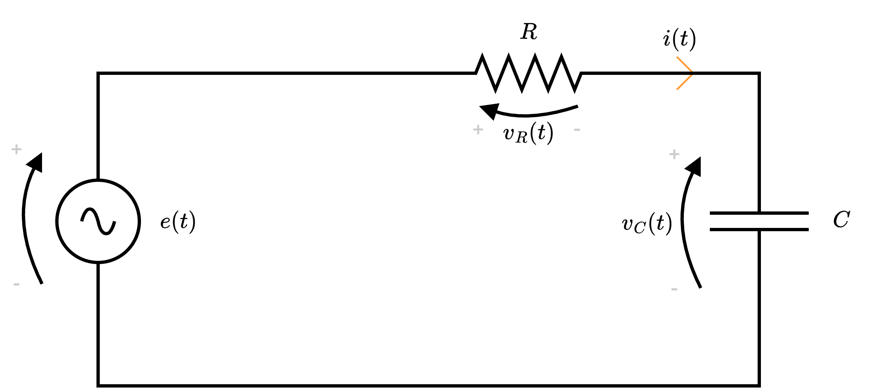
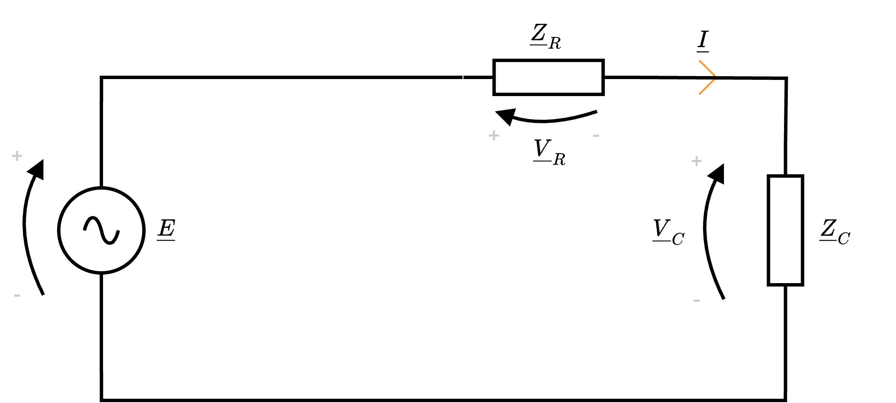
Calcolando \( \underline{V}_C\), considerando la formula del partitore di tensione, si ha che \[ \begin{array}{ccl} \underline{V}_C & = & \underline{E} \cdot \frac{\underline{Z}_C}{\underline{Z}_R + \underline{Z}_C} \\ & = & \underline{E} \cdot \frac{\frac{1}{\jmath \cdot \omega \cdot C}}{R + \frac{1}{\jmath \cdot \omega \cdot C}} \\ & = & \underline{E} \cdot \frac{\frac{1}{\jmath \cdot \omega \cdot C}}{\frac{\jmath \cdot \omega \cdot C \cdot R + 1}{\jmath \cdot \omega \cdot C}} \\ & = & \underline{E} \cdot \frac{1}{\jmath \cdot \omega \cdot C \cdot R + 1} \end{array} \] da cui è poi possibile calcolare la funzione di trasferimento come \[ \begin{array}{ccl} \underline{H}(\omega) & = & \frac{\underline{V}_C}{\underline{E}} \\ & = & \frac{\underline{E} \cdot \frac{1}{\jmath \cdot \omega \cdot C \cdot R + 1}}{\underline{E}} \\ & = & \frac{1}{\jmath \cdot \omega \cdot C \cdot R + 1} \\ & \overset{\cdot \frac{1 - \jmath \cdot \omega \cdot C \cdot R}{1 - \jmath \cdot \omega \cdot C \cdot R}}{=} & \frac{1}{\jmath \cdot \omega \cdot C \cdot R + 1} \cdot \frac{1 - \jmath \cdot \omega \cdot C \cdot R}{1 - \jmath \cdot \omega \cdot C \cdot R} \\ & = & \frac{1 - \jmath \cdot \omega \cdot C \cdot R}{\omega^2 \cdot C^2 \cdot R^2 + 1} \end{array} \] È quindi possibile calcolare il modulo della funzione di trasferimento come \[ \begin{array}{ccl} \left| \underline{H}(\omega) \right| & = & \left| \frac{1}{1 + \jmath \cdot \omega \cdot C \cdot R} \right| \\ & = & \frac{1}{\sqrt{1 + \omega^2 \cdot C^2 \cdot R^2}} \end{array} \] da cui è possibile calcolare la pulsazione di taglio cercando il valore per cui il modulo è uguale a \( \; {}^{1} /_{\sqrt{2}\;}\) \begin{aligned} & \left| \underline{H}(\omega) \right| = \frac{1}{\sqrt{2}} & \iff \\ & \frac{1}{\sqrt{1 + \omega^2 \cdot C^2 \cdot R^2}} = \frac{1}{\sqrt{2}} & \iff \\ & 1 + \omega^2 \cdot C^2 \cdot R^2 = 2 & \iff \\ & \omega^2 = \frac{1}{R^2 \cdot C^2} & \iff \\ & \omega_T = \frac{1}{R \cdot C} & \end{aligned} Graficando tale relazione, si ottiene
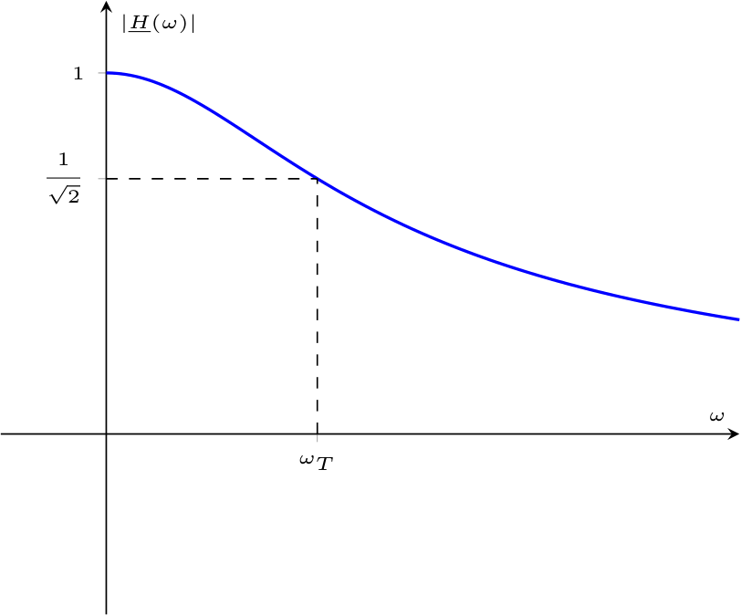
Considerando la fase, essa è uguale a \[ \begin{array}{ccl} \angle \underline{H}(\omega) & = & \arctan\left( \frac{\frac{-\omega \cdot C \cdot R}{\omega^2 \cdot C^2 \cdot R^2 + 1}}{\frac{1}{\omega^2 \cdot C^2 \cdot R^2 + 1}}\right) \\ & = & \arctan\left(\frac{-\omega \cdot C \cdot R}{1} \right) \\ & = & \arctan\left(-\omega \cdot C \cdot R \right) \end{array} \] che graficata è uguale a
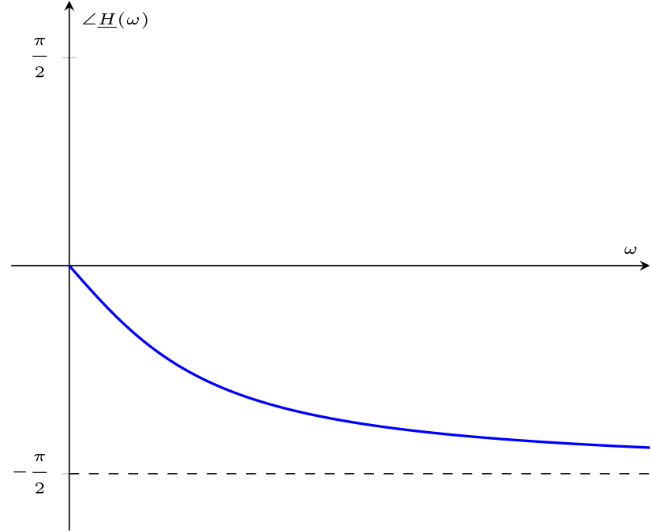
Nota bene - Circuito RC come filtro passa-alto
Considerando come uscita la tensione \( \underline{V}_R\), si ha che è possibile utilizzare questo circuito come filtro passa-alto.
Definizione - Filtro passa-alto
Un filtro passa-alto ideale è una rete caratterizzata dalla seguente funzione di trasferimento dove \( \omega_T\) è la pulsazione di taglio.
Questo filtro permette il passaggio di segnale ad una frequenza "alta" mentre attenua i segnali ad una frequenza "bassa" (rispetto alla frequenza di taglio). che, applicando Steinmetz, equivalerebbe al seguente circuito in cui si considera come segnale di ingresso quello del generatore \( \underline{E}\) e come segnale in uscita la tensione ai capi dell'induttore \( \underline{V}_L\).
Calcolando \( \underline{V}_L\), considerando la formula del partitore di tensione, si ha che \[ \begin{array}{ccl} \underline{V}_L & = & \underline{E} \cdot \frac{\underline{Z}_L}{\underline{Z}_R + \underline{Z}_L} \\ & = & \underline{E} \cdot \frac{\jmath \cdot \omega \cdot L}{R + \jmath \cdot \omega \cdot L} \end{array} \] è poi possibile calcolare la funzione di trasferimento come \[ \begin{array}{ccl} \underline{H}(\omega) & = & \frac{\underline{V}_L}{\underline{E}} \\ & = & \frac{\underline{E} \cdot \frac{\jmath \cdot \omega \cdot L}{R + \jmath \cdot \omega \cdot L}}{\underline{E}} \\ & = & \frac{\jmath \cdot \omega \cdot L}{R + \jmath \cdot \omega \cdot L} \\ & \overset{\cdot \frac{\frac{1}{R}}{\frac{1}{R}}}{=} & \frac{\jmath \cdot \omega \cdot L}{R + \jmath \cdot \omega \cdot L} \cdot \frac{\frac{1}{R}}{\frac{1}{R}} \\ & = & \frac{\jmath \cdot \omega \cdot \frac{L}{R}}{1 + \jmath \cdot \omega \cdot \frac{L}{R}} \end{array} \] È quindi possibile calcolare il modulo della funzione di trasferimento come \[ \begin{array}{ccl} \left| \underline{H}(\omega) \right| & = & \left| \frac{\jmath \cdot \omega \cdot \frac{L}{R}}{1 + \jmath \cdot \omega \cdot \frac{L}{R}} \right| \\ & = & \frac{\omega \cdot \frac{L}{R}}{\sqrt{1 + \omega^2 \cdot \frac{L^2}{R^2}}} \end{array} \] da cui è possibile calcolare la pulsazione di taglio cercando il valore per cui il modulo è uguale a \( \; {}^{1} /_{\sqrt{2}\;}\) \begin{aligned} & \left| \underline{H}(\omega) \right| = \frac{1}{\sqrt{2}} & \iff \\ & \frac{\omega \cdot \frac{L}{R}}{\sqrt{1 + \omega^2 \cdot \frac{L^2}{R^2}}} = \frac{1}{\sqrt{2}} & \iff \\ & \omega_T = \frac{R}{L} & \end{aligned} Graficando tale relazione, si ottiene che approssima bene la funzione di trasferimento di un filtro passa-alto ideale.
Al fine di calcolare la fase, consideriamo che la funzione di trasferimento \( \underline{H}(\omega)\) può essere scritta come \[ \begin{array}{ccl} \underline{H}(\omega) & = & \frac{\jmath \cdot \omega \cdot \frac{L}{R}}{1 + \jmath \cdot \omega \cdot \frac{L}{R}} \\ & \overset{\omega_T = \frac{R}{L}}{=} & \frac{\jmath \cdot \frac{\omega}{\omega_T}}{1 + \jmath \cdot \frac{\omega}{\omega_T}} \\ & \overset{\cdot \frac{1 - \jmath \cdot \frac{\omega}{\omega_T}}{1 - \jmath \cdot \frac{\omega}{\omega_T}}}{=} & \frac{\jmath \cdot \frac{\omega}{\omega_T}}{1 + \jmath \cdot \frac{\omega}{\omega_T}} \cdot \frac{1 - \jmath \cdot \frac{\omega}{\omega_T}}{1 - \jmath \cdot \frac{\omega}{\omega_T}} \\ & = & \frac{\jmath \cdot \frac{\omega}{\omega_T} + \frac{\omega^2}{(\omega_T)^2}}{1 + \frac{\omega^2}{(\omega_T)^2}} \end{array} \] da cui è possibile calcolare la fase \[ \begin{array}{ccl} \angle \underline{H}(\omega) & = & \arctan\left( \frac{\frac{\frac{\omega}{\omega_T}}{1 + \frac{\omega^2}{(\omega_T)^2}}}{\frac{\frac{\omega^2}{(\omega_T)^2}}{1 + \frac{\omega^2}{(\omega_T)^2}}} \right) \\ & = & \arctan\left( \frac{\frac{\omega}{\omega_T}}{\frac{\omega^2}{(\omega_T)^2}} \right) \\ & = & \arctan\left( \frac{1}{\frac{\omega}{\omega_T}} \right) \\ & = & \arctan\left( \frac{\omega_T}{\omega} \right) \\ & \overset{\frac{R}{L} = \omega_T}{=} & \arctan\left( \frac{\frac{R}{L}}{\omega} \right) \\ & = & \arctan\left( \frac{R}{L \cdot \omega} \right) \end{array} \] che graficata è uguale a
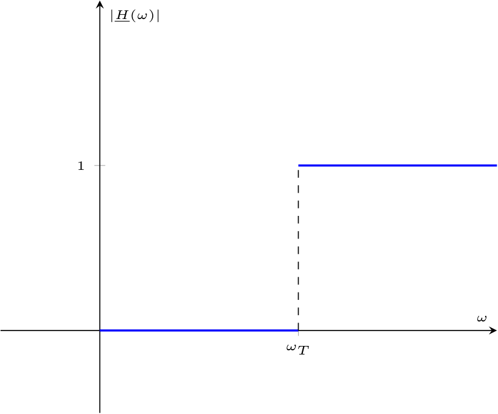
Questo filtro permette il passaggio di segnale ad una frequenza "alta" mentre attenua i segnali ad una frequenza "bassa" (rispetto alla frequenza di taglio).
Realizzazione di un filtro passa-alto con un circuito RL
È possibile realizzare un filtro passa-alto per la tensione utilizzando un circuito RL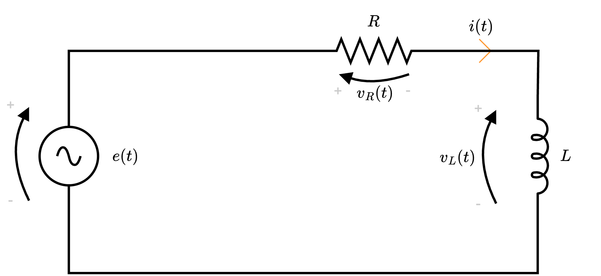
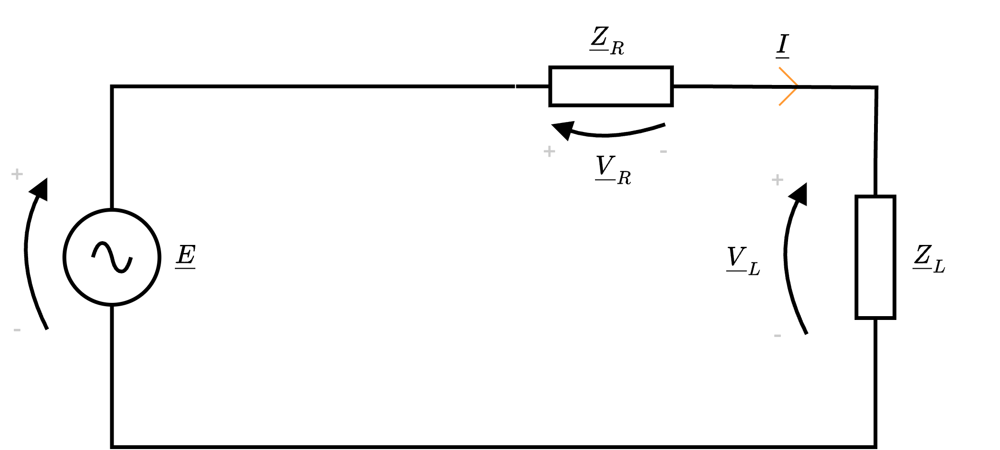
Calcolando \( \underline{V}_L\), considerando la formula del partitore di tensione, si ha che \[ \begin{array}{ccl} \underline{V}_L & = & \underline{E} \cdot \frac{\underline{Z}_L}{\underline{Z}_R + \underline{Z}_L} \\ & = & \underline{E} \cdot \frac{\jmath \cdot \omega \cdot L}{R + \jmath \cdot \omega \cdot L} \end{array} \] è poi possibile calcolare la funzione di trasferimento come \[ \begin{array}{ccl} \underline{H}(\omega) & = & \frac{\underline{V}_L}{\underline{E}} \\ & = & \frac{\underline{E} \cdot \frac{\jmath \cdot \omega \cdot L}{R + \jmath \cdot \omega \cdot L}}{\underline{E}} \\ & = & \frac{\jmath \cdot \omega \cdot L}{R + \jmath \cdot \omega \cdot L} \\ & \overset{\cdot \frac{\frac{1}{R}}{\frac{1}{R}}}{=} & \frac{\jmath \cdot \omega \cdot L}{R + \jmath \cdot \omega \cdot L} \cdot \frac{\frac{1}{R}}{\frac{1}{R}} \\ & = & \frac{\jmath \cdot \omega \cdot \frac{L}{R}}{1 + \jmath \cdot \omega \cdot \frac{L}{R}} \end{array} \] È quindi possibile calcolare il modulo della funzione di trasferimento come \[ \begin{array}{ccl} \left| \underline{H}(\omega) \right| & = & \left| \frac{\jmath \cdot \omega \cdot \frac{L}{R}}{1 + \jmath \cdot \omega \cdot \frac{L}{R}} \right| \\ & = & \frac{\omega \cdot \frac{L}{R}}{\sqrt{1 + \omega^2 \cdot \frac{L^2}{R^2}}} \end{array} \] da cui è possibile calcolare la pulsazione di taglio cercando il valore per cui il modulo è uguale a \( \; {}^{1} /_{\sqrt{2}\;}\) \begin{aligned} & \left| \underline{H}(\omega) \right| = \frac{1}{\sqrt{2}} & \iff \\ & \frac{\omega \cdot \frac{L}{R}}{\sqrt{1 + \omega^2 \cdot \frac{L^2}{R^2}}} = \frac{1}{\sqrt{2}} & \iff \\ & \omega_T = \frac{R}{L} & \end{aligned} Graficando tale relazione, si ottiene
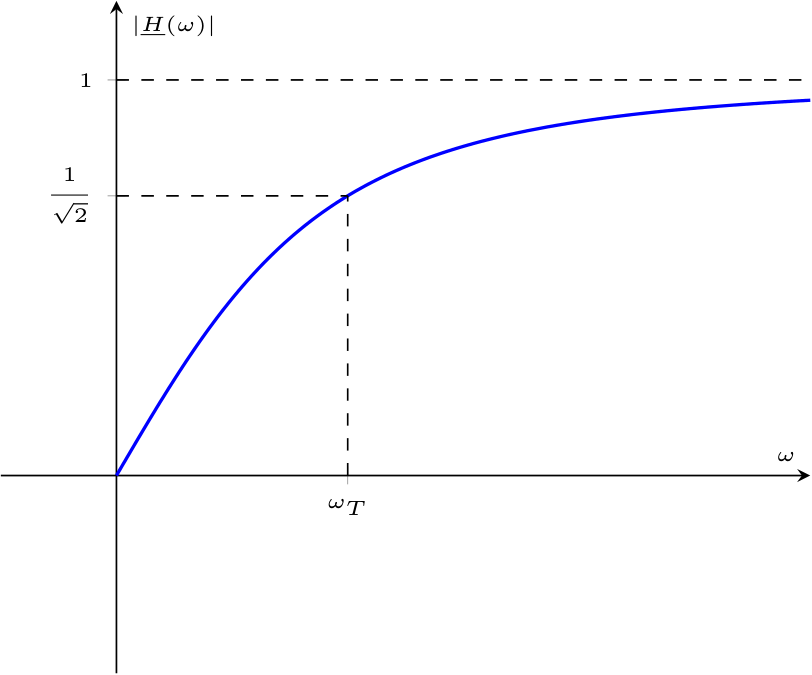
Al fine di calcolare la fase, consideriamo che la funzione di trasferimento \( \underline{H}(\omega)\) può essere scritta come \[ \begin{array}{ccl} \underline{H}(\omega) & = & \frac{\jmath \cdot \omega \cdot \frac{L}{R}}{1 + \jmath \cdot \omega \cdot \frac{L}{R}} \\ & \overset{\omega_T = \frac{R}{L}}{=} & \frac{\jmath \cdot \frac{\omega}{\omega_T}}{1 + \jmath \cdot \frac{\omega}{\omega_T}} \\ & \overset{\cdot \frac{1 - \jmath \cdot \frac{\omega}{\omega_T}}{1 - \jmath \cdot \frac{\omega}{\omega_T}}}{=} & \frac{\jmath \cdot \frac{\omega}{\omega_T}}{1 + \jmath \cdot \frac{\omega}{\omega_T}} \cdot \frac{1 - \jmath \cdot \frac{\omega}{\omega_T}}{1 - \jmath \cdot \frac{\omega}{\omega_T}} \\ & = & \frac{\jmath \cdot \frac{\omega}{\omega_T} + \frac{\omega^2}{(\omega_T)^2}}{1 + \frac{\omega^2}{(\omega_T)^2}} \end{array} \] da cui è possibile calcolare la fase \[ \begin{array}{ccl} \angle \underline{H}(\omega) & = & \arctan\left( \frac{\frac{\frac{\omega}{\omega_T}}{1 + \frac{\omega^2}{(\omega_T)^2}}}{\frac{\frac{\omega^2}{(\omega_T)^2}}{1 + \frac{\omega^2}{(\omega_T)^2}}} \right) \\ & = & \arctan\left( \frac{\frac{\omega}{\omega_T}}{\frac{\omega^2}{(\omega_T)^2}} \right) \\ & = & \arctan\left( \frac{1}{\frac{\omega}{\omega_T}} \right) \\ & = & \arctan\left( \frac{\omega_T}{\omega} \right) \\ & \overset{\frac{R}{L} = \omega_T}{=} & \arctan\left( \frac{\frac{R}{L}}{\omega} \right) \\ & = & \arctan\left( \frac{R}{L \cdot \omega} \right) \end{array} \] che graficata è uguale a
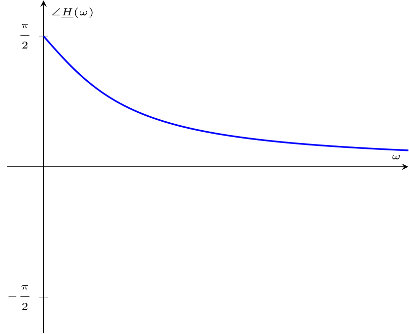
Nota bene - Circuito RL come filtro passa-basso
Considerando come uscita la tensione \( \underline{V}_R\), si ha che è possibile utilizzare questo circuito come filtro passa-basso.
Definizione - Filtro passa-banda
Un filtro passa-banda ideale è una rete caratterizzata dalla seguente funzione di trasferimento dove \( \omega_T\) è la pulsazione di taglio e la lunghezza dell'intervallo \( [\omega_1, \omega_2]\) è detta ampiezza di banda.
Questo filtro permette il passaggio di segnale ad una frequenza compresa nell'intervallo \( [\omega_1, \omega_2]\) mentre attenua i segnali ad altre frequenze. che, applicando Steinmetz, equivalerebbe al seguente circuito in cui si considera come segnale di ingresso quello del generatore \( \underline{E}\) e come segnale in uscita la tensione ai capi del resistore \( \underline{V}_R\).
Calcolando \( \underline{V}_R\), considerando la formula del partitore di tensione, si ha che \[ \begin{array}{ccl} \underline{V}_L & = & \underline{E} \cdot \frac{\underline{Z}_R}{\underline{Z}_R + \underline{Z}_L + \underline{Z}_C} \\ & = & \underline{E} \cdot \frac{R}{R + \jmath \cdot \omega \cdot L - \jmath \cdot \frac{1}{\omega \cdot C}} \\ & = & \underline{E} \cdot \frac{R}{R + \jmath \cdot \left( \omega \cdot L - \frac{1}{\omega \cdot C} \right)} \end{array} \] è poi possibile calcolare la funzione di trasferimento come \[ \begin{array}{ccl} \underline{H}(\omega) & = & \frac{\underline{V}_R}{\underline{E}} \\ & = & \frac{\underline{E} \cdot \frac{R}{R + \jmath \cdot \left( \omega \cdot L - \frac{1}{\omega \cdot C} \right)}}{\underline{E}} \\ & = & \frac{R}{R + \jmath \cdot \left( \omega \cdot L - \frac{1}{\omega \cdot C} \right)} \\ & \overset{\cdot \frac{R - \jmath \cdot \left( \omega \cdot L - \frac{1}{\omega \cdot C} \right)}{R - \jmath \cdot \left( \omega \cdot L - \frac{1}{\omega \cdot C} \right)}}{=} & \frac{R}{R + \jmath \cdot \left( \omega \cdot L - \frac{1}{\omega \cdot C} \right)} \cdot \frac{R - \jmath \cdot \left( \omega \cdot L - \frac{1}{\omega \cdot C} \right)}{R - \jmath \cdot \left( \omega \cdot L - \frac{1}{\omega \cdot C} \right)} \\ & = & \frac{R^2 - \jmath \cdot R \cdot \left( \omega \cdot L - \frac{1}{\omega \cdot C} \right)}{R^2 - \left( \omega \cdot L - \frac{1}{\omega \cdot C} \right)^2} \end{array} \] È quindi possibile calcolare il modulo della funzione di trasferimento come \[ \begin{array}{ccl} \left| \underline{H}(\omega) \right| & = & \left| \frac{R}{R + \jmath \cdot \left( \omega \cdot L - \frac{1}{\omega \cdot C} \right)} \right| \\ & = & \frac{R}{\sqrt{R^2 + \left( \omega \cdot L - \frac{1}{\omega \cdot C} \right)^2}} \end{array} \] e considerare la pulsazione di taglio pari a \[ \omega_T = \frac{1}{\sqrt{L \cdot C}} \] Graficando tale relazione, si ottiene che approssima bene la funzione di trasferimento di un filtro passa-banda ideale.
Considerando la fase, essa è uguale a \[ \begin{array}{ccl} \angle \underline{H}(\omega) & = & \arctan\left( \frac{\frac{- R \cdot \left( \omega \cdot L - \frac{1}{\omega \cdot C} \right)}{R^2 - \left( \omega \cdot L - \frac{1}{\omega \cdot C} \right)^2}}{\frac{R^2}{R^2 - \left( \omega \cdot L - \frac{1}{\omega \cdot C} \right)^2}} \right) \\ & = & \arctan\left( \frac{- R \cdot \left( \omega \cdot L - \frac{1}{\omega \cdot C} \right)}{R^2} \right) \\ & = & \arctan\left( \frac{\frac{1}{\omega \cdot C} - \omega \cdot L }{R} \right) \\ \end{array} \] che graficata è uguale a
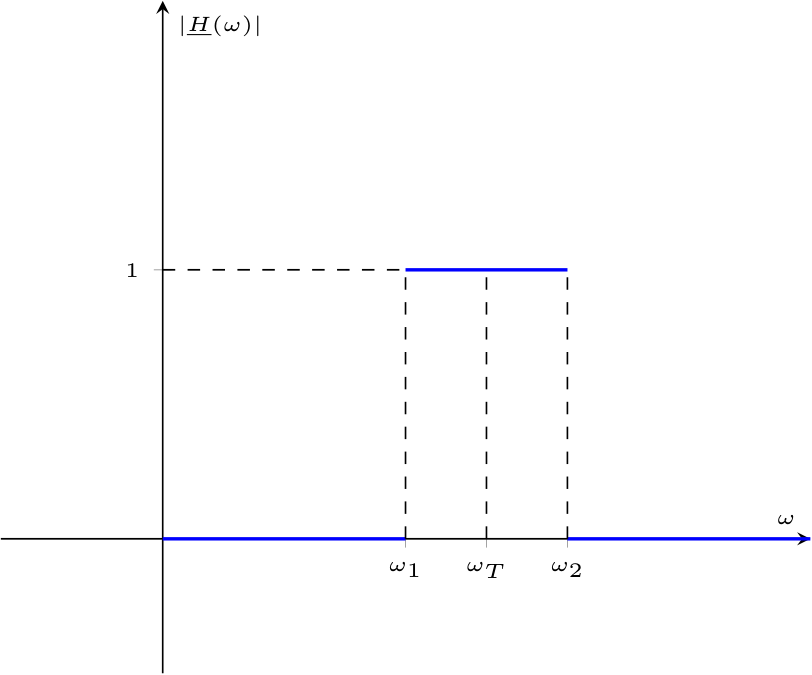
Questo filtro permette il passaggio di segnale ad una frequenza compresa nell'intervallo \( [\omega_1, \omega_2]\) mentre attenua i segnali ad altre frequenze.
Realizzazione di un filtro passa-banda con un circuito RLC
È possibile realizzare un filtro passa-banda per la tensione utilizzando un circuito RLC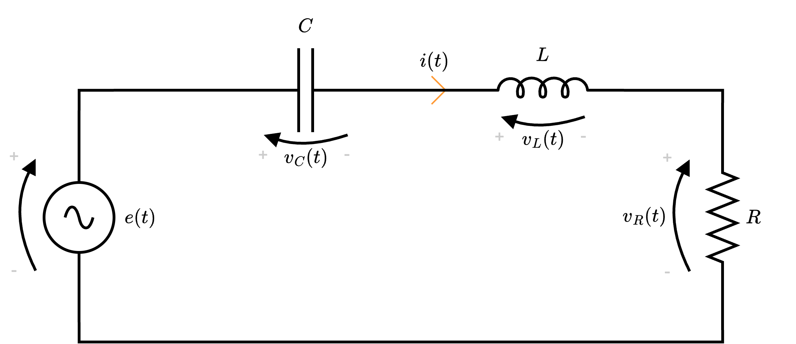
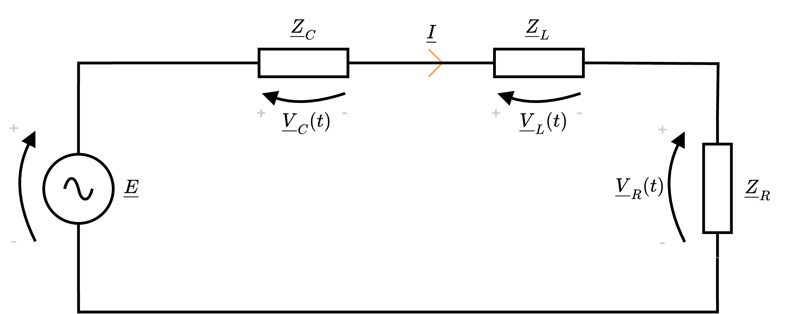
Calcolando \( \underline{V}_R\), considerando la formula del partitore di tensione, si ha che \[ \begin{array}{ccl} \underline{V}_L & = & \underline{E} \cdot \frac{\underline{Z}_R}{\underline{Z}_R + \underline{Z}_L + \underline{Z}_C} \\ & = & \underline{E} \cdot \frac{R}{R + \jmath \cdot \omega \cdot L - \jmath \cdot \frac{1}{\omega \cdot C}} \\ & = & \underline{E} \cdot \frac{R}{R + \jmath \cdot \left( \omega \cdot L - \frac{1}{\omega \cdot C} \right)} \end{array} \] è poi possibile calcolare la funzione di trasferimento come \[ \begin{array}{ccl} \underline{H}(\omega) & = & \frac{\underline{V}_R}{\underline{E}} \\ & = & \frac{\underline{E} \cdot \frac{R}{R + \jmath \cdot \left( \omega \cdot L - \frac{1}{\omega \cdot C} \right)}}{\underline{E}} \\ & = & \frac{R}{R + \jmath \cdot \left( \omega \cdot L - \frac{1}{\omega \cdot C} \right)} \\ & \overset{\cdot \frac{R - \jmath \cdot \left( \omega \cdot L - \frac{1}{\omega \cdot C} \right)}{R - \jmath \cdot \left( \omega \cdot L - \frac{1}{\omega \cdot C} \right)}}{=} & \frac{R}{R + \jmath \cdot \left( \omega \cdot L - \frac{1}{\omega \cdot C} \right)} \cdot \frac{R - \jmath \cdot \left( \omega \cdot L - \frac{1}{\omega \cdot C} \right)}{R - \jmath \cdot \left( \omega \cdot L - \frac{1}{\omega \cdot C} \right)} \\ & = & \frac{R^2 - \jmath \cdot R \cdot \left( \omega \cdot L - \frac{1}{\omega \cdot C} \right)}{R^2 - \left( \omega \cdot L - \frac{1}{\omega \cdot C} \right)^2} \end{array} \] È quindi possibile calcolare il modulo della funzione di trasferimento come \[ \begin{array}{ccl} \left| \underline{H}(\omega) \right| & = & \left| \frac{R}{R + \jmath \cdot \left( \omega \cdot L - \frac{1}{\omega \cdot C} \right)} \right| \\ & = & \frac{R}{\sqrt{R^2 + \left( \omega \cdot L - \frac{1}{\omega \cdot C} \right)^2}} \end{array} \] e considerare la pulsazione di taglio pari a \[ \omega_T = \frac{1}{\sqrt{L \cdot C}} \] Graficando tale relazione, si ottiene
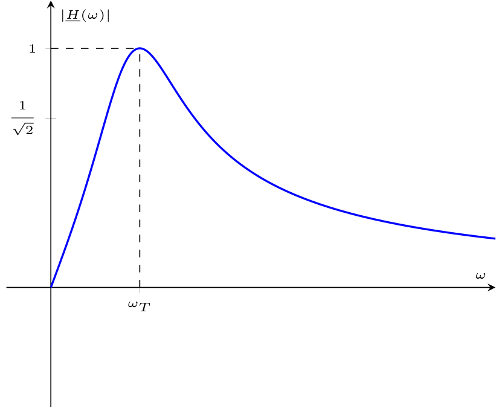
Considerando la fase, essa è uguale a \[ \begin{array}{ccl} \angle \underline{H}(\omega) & = & \arctan\left( \frac{\frac{- R \cdot \left( \omega \cdot L - \frac{1}{\omega \cdot C} \right)}{R^2 - \left( \omega \cdot L - \frac{1}{\omega \cdot C} \right)^2}}{\frac{R^2}{R^2 - \left( \omega \cdot L - \frac{1}{\omega \cdot C} \right)^2}} \right) \\ & = & \arctan\left( \frac{- R \cdot \left( \omega \cdot L - \frac{1}{\omega \cdot C} \right)}{R^2} \right) \\ & = & \arctan\left( \frac{\frac{1}{\omega \cdot C} - \omega \cdot L }{R} \right) \\ \end{array} \] che graficata è uguale a
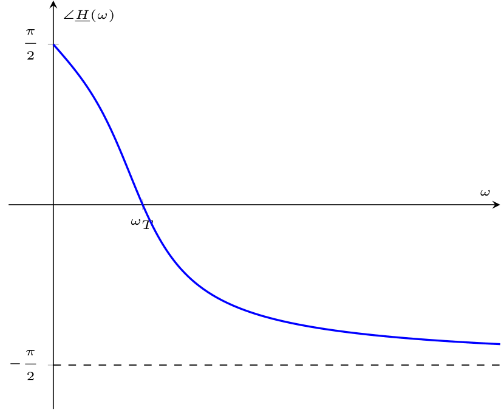
Nota bene - Circuito RLC come filtro arresta-banda
Considerando come uscita la tensione \( \underline{V}_C + \underline{V}_L\), si ha che è possibile utilizzare questo circuito come filtro arresta-banda.